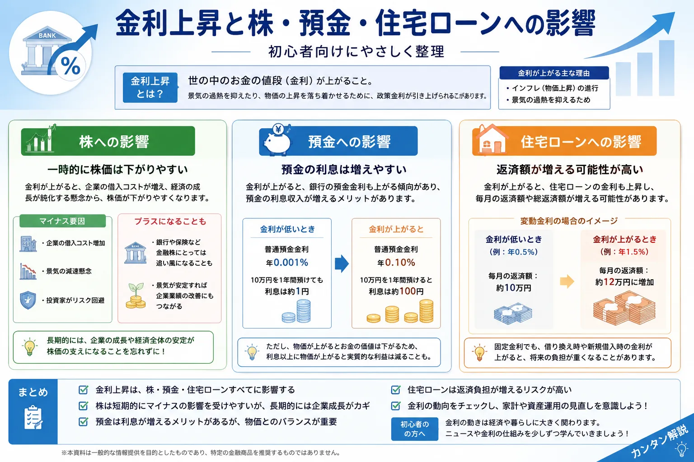

Summary
金利上昇とは？まずは「お金の値段」と考える
金利とは、お金を借りるときに支払う利息、またはお金を預けるときに受け取る利息の割合です。金利上昇とは、この利息の水準が上がることを指します。
借りる側
お金を借りるコストが上がる
企業の借入、住宅ローン、カードローンなどでは、金利が上がると返済負担が増える場合があります。
預ける側
預金利息が増える可能性がある
銀行によって対応は異なりますが、金利上昇局面では普通預金や定期預金の金利が見直されることがあります。
投資家
株・債券・為替の見方が変わる
金利は企業業績、債券価格、為替、投資家心理に影響するため、投資判断の材料のひとつになります。
- 金利上昇は、単に「良い」「悪い」で判断するものではありません。
- 借りる人には負担、預ける人には利息増というように、立場によって影響が変わります。
- 投資では、金利だけでなく景気・企業業績・為替・物価も合わせて見ることが大切です。
Trend
なぜ今、金利上昇が話題なのか
日本では長い間、低金利が続いてきました。しかし、物価上昇や賃金動向、金融政策の変更を背景に、金利のある環境へ移りつつあります。住宅金融支援機構も、マイナス金利政策解除後の追加利上げにより、変動金利型住宅ローンに影響を及ぼす政策金利が上昇していると説明しています。
政策金利とは？
政策金利は、中央銀行が金融政策を行ううえで重要な金利です。政策金利が変わると、市場金利や銀行の貸出金利、住宅ローン金利などに影響が広がることがあります。
利上げとは？
利上げとは、中央銀行が政策金利を引き上げることです。物価上昇を抑えたり、景気の過熱を調整したりする目的で行われることがあります。
Deposit
金利上昇で預金はどうなる？
預金者にとって金利上昇は、利息が増える可能性があるという意味ではプラスに働く場合があります。普通預金や定期預金の金利が見直されると、同じ金額を預けていても受け取れる利息が増えることがあります。
普通預金
日常的に使うお金を置く場所です。金利が上がっても大きな利息にはなりにくいですが、以前より利息が付きやすくなる可能性があります。
定期預金
一定期間預けることで、普通預金より高い金利が設定される場合があります。ただし途中解約や期間の条件を確認する必要があります。
生活防衛資金
投資だけでなく、すぐ使える現金を確保することも大切です。金利上昇局面でも、生活費の数か月分は安全性を優先して管理します。
Stock Market
金利上昇と株価の関係｜株は必ず下がるわけではない
金利上昇は株式市場に影響しますが、「金利が上がる＝株が必ず下がる」と決めつけるのは危険です。株価は、企業業績、景気、投資家心理、為替、政策期待など複数の要因で動きます。
企業の借入コストが上がる
金利が上がると、借入の多い企業は利息負担が増える場合があります。利益への影響が意識されると、株価の重しになることがあります。
預金や債券との比較が変わる
安全性の高い預金や債券の利回りが上がると、株式に求められるリターンの見方が変わることがあります。
業種によって影響が違う
金融機関のように金利上昇が追い風になる場合もあれば、借入負担が重い業種では逆風になる場合もあります。
- 金利上昇は株価に影響する材料のひとつです。
- 短期的には市場心理で大きく動くことがあります。
- 長期的には企業の利益成長や事業内容も重要です。
Fund / NISA
投資信託やNISAへの影響は？
投資信託やNISAも、金利上昇と無関係ではありません。ただし、NISAはあくまで非課税制度であり、金利上昇によって制度そのものが不利になるわけではありません。影響を受けるのは、NISA口座で保有している株式・投資信託・ETFなどの中身です。
-
株式型の投資信託
株式市場の影響を受けます。金利上昇で株価が調整する場面もありますが、地域・業種・企業業績によって動きは異なります。
-
債券型の投資信託
一般的に、金利が上がると既存の債券価格は下がりやすくなります。ただし、保有期間や債券の種類によって影響は変わります。
-
バランス型の投資信託
株式や債券など複数資産に分散しています。金利上昇の影響は中身の配分によって変わります。
-
積立投資
短期ニュースで毎回売買を変えるよりも、投資目的・期間・家計状況を確認しながら継続可否を考えることが大切です。
Housing Loan
住宅ローンへの影響｜変動金利と固定金利で見方が違う
金利上昇は、住宅ローンにも関係します。特に変動金利型は政策金利の影響を受けやすく、固定金利型は長期金利の動きが参考にされることがあります。住宅ローンを利用している人は、投資より先に家計全体への影響を確認することが大切です。
| 金利タイプ | 特徴 | 金利上昇時の見方 | 初心者の確認ポイント |
|---|---|---|---|
| 変動金利 | 一定期間ごとに金利が見直されるタイプ | 将来の返済額が増える可能性がある | 返済額が増えても家計が耐えられるか確認 |
| 固定金利 | 借入時などに決めた金利が一定期間固定されるタイプ | 新規借入時の金利が上がる場合がある | 安心感と金利水準のバランスを見る |
| ミックス型 | 変動と固定を組み合わせるタイプ | 一部は金利上昇の影響を受ける | 仕組みを理解してから選ぶ |
※ 横にスクロールできます
Compare
金利上昇の影響まとめ表
金利上昇の影響は、預金・住宅ローン・株式・投資信託・NISAでそれぞれ違います。スマホでは横にスクロールして確認できます。
| 対象 | 起こりやすい影響 | プラス面 | 注意点 | 初心者の見方 |
|---|---|---|---|---|
| 預金 | 預金金利が見直される場合がある | 利息が増える可能性 | 利息だけで大きく増えるとは限らない | 生活防衛資金の置き場所として確認 |
| 住宅ローン | 返済額が増える可能性 | 固定型なら影響を抑えられる場合もある | 変動金利は将来負担を確認 | 投資より先に家計の安全性を見る |
| 株式 | 企業の借入コストや市場心理に影響 | 金融株など追い風になる業種もある | 必ず下がるとは限らない | 金利だけで売買を決めない |
| 投資信託 | 中身の資産によって影響が変わる | 分散効果を確認しやすい | 債券価格は金利上昇で下がりやすい | 保有商品の中身を見る |
| NISA | 制度ではなく保有商品の価格が影響を受ける | 長期投資の非課税メリットは残る | 短期の値動きに焦りやすい | 目的・期間・積立額を再確認 |
| 為替 | 金利差が意識されることがある | 外貨資産の円換算額が増える場合もある | 円高・円安で損益が変わる | 海外株やFXでは為替も確認 |
※ 横にスクロールできます
Beginner Guide
投資初心者は金利上昇をどう考えればいい？
金利上昇のニュースを見ると不安になりやすいですが、初心者が最初に意識したいのは「今すぐ売るか買うか」ではありません。自分の投資目的、生活費、保有商品、投資期間を確認することが大切です。
-
ニュースだけで焦って売買しない
金利ニュースは重要ですが、短期的な値動きだけで判断すると、売買が感情的になりやすくなります。
-
生活防衛資金を先に確認する
金利上昇で住宅ローンや支出に影響が出る場合、投資額よりも家計の安全性を優先する必要があります。
-
保有商品の中身を見る
投資信託なら株式中心なのか、債券中心なのか、国内なのか海外なのかを確認すると、金利上昇の影響を考えやすくなります。
-
長期投資なら短期の値動きと分けて考える
NISAや積立投資では、短期ニュースよりも長期の資産形成方針が大切です。無理のない金額で続けられるかを確認しましょう。
Related Articles
あわせて読みたい関連記事
金利上昇を理解するには、株価が動く理由、リスクとリターン、分散投資、長期投資の考え方も合わせて確認すると整理しやすくなります。
Next Step
金利ニュースは「売買サイン」ではなく、お金全体を見直すきっかけにする
金利上昇は、投資だけでなく預金・ローン・家計にも関係します。ニュースを見て焦るのではなく、自分の投資額、保有商品、住宅ローン、生活防衛資金を確認する材料として使いましょう。
FAQ
よくある質問
金利が上がると株は必ず下がりますか？
必ず下がるとは限りません。金利上昇は企業の借入コストや投資家心理に影響しますが、株価は企業業績、景気、為替、投資家の期待など複数の要因で動きます。
金利上昇で預金金利も上がりますか？
銀行によって対応は異なりますが、政策金利や市場金利が上がると、普通預金や定期預金の金利が見直される場合があります。
NISAは金利上昇で不利になりますか？
NISA制度そのものが金利上昇で不利になるわけではありません。ただし、NISA口座で保有している投資信託や株式などの価格は、金利や景気、企業業績の影響を受ける場合があります。
初心者は利上げニュースで売買した方がいいですか？
ニュースだけで売買を決めるのは注意が必要です。投資目的、保有期間、資金計画、リスク許容度を確認し、必要なら投資ルールを見直すことが大切です。
Reference
参考にした主な公的・関連情報
金利や金融政策は変化するため、最新情報は公的機関や金融機関の公式情報も確認してください。
ご利用にあたっての注意事項
本記事は情報提供を目的としており、投資の勧誘や特定の金融商品の売買を推奨するものではありません。株式・投資信託・ETF・外国証券・FX・仮想通貨等の取引は元本保証がなく、相場変動・為替変動・金利変動等により損失が生じる場合があります。取引開始前に、契約締結前交付書面、目論見書、商品説明書、各金融機関の公式情報を必ず確認し、ご自身の判断と責任でお取引ください。